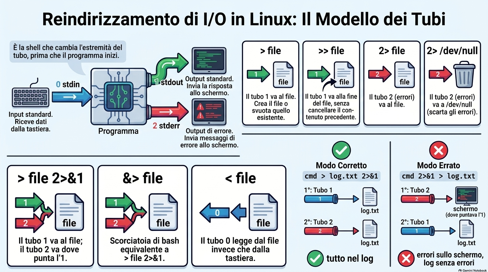
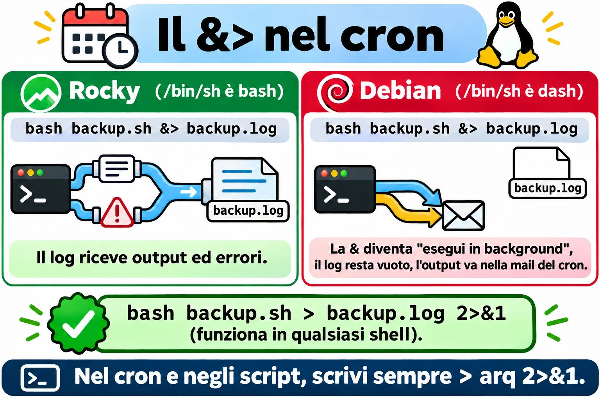
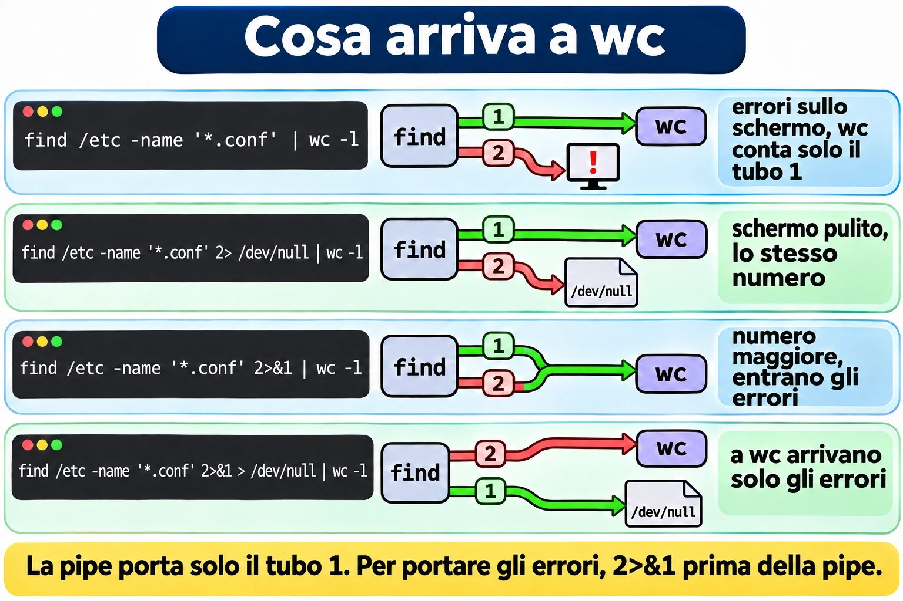
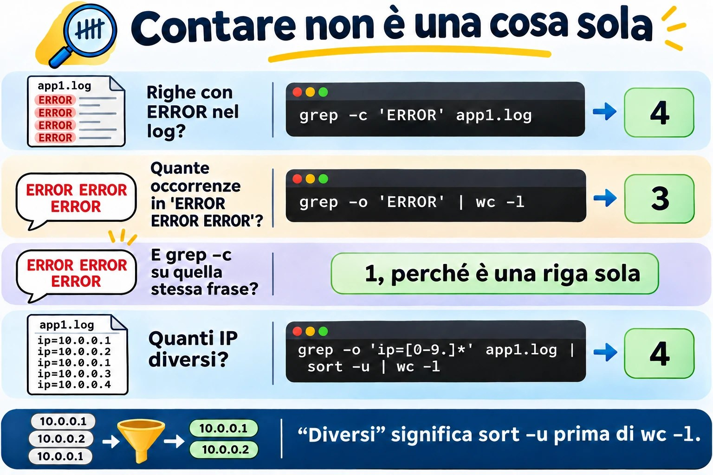
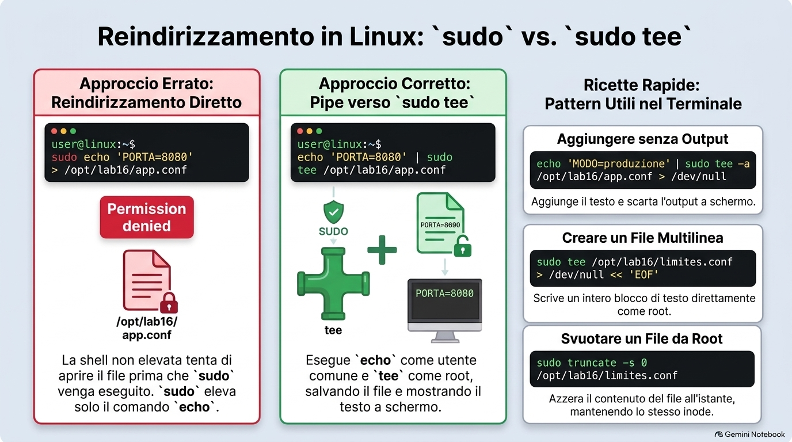
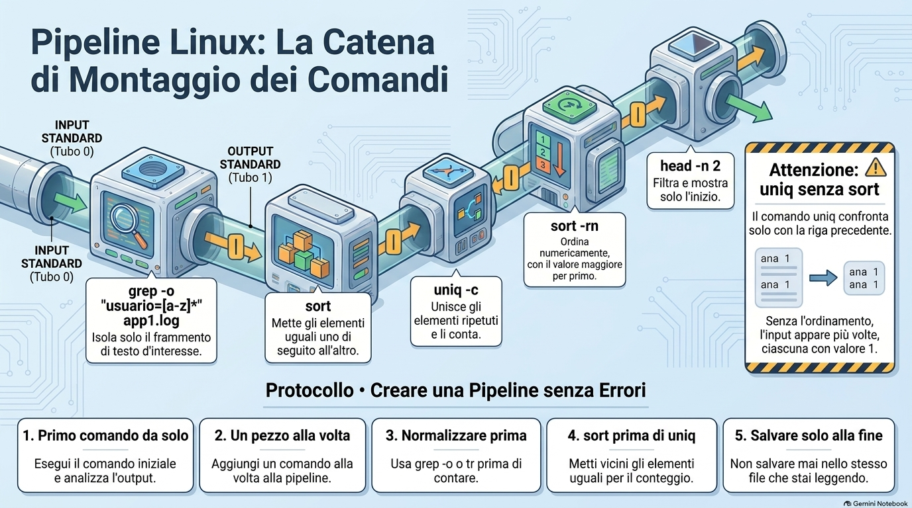
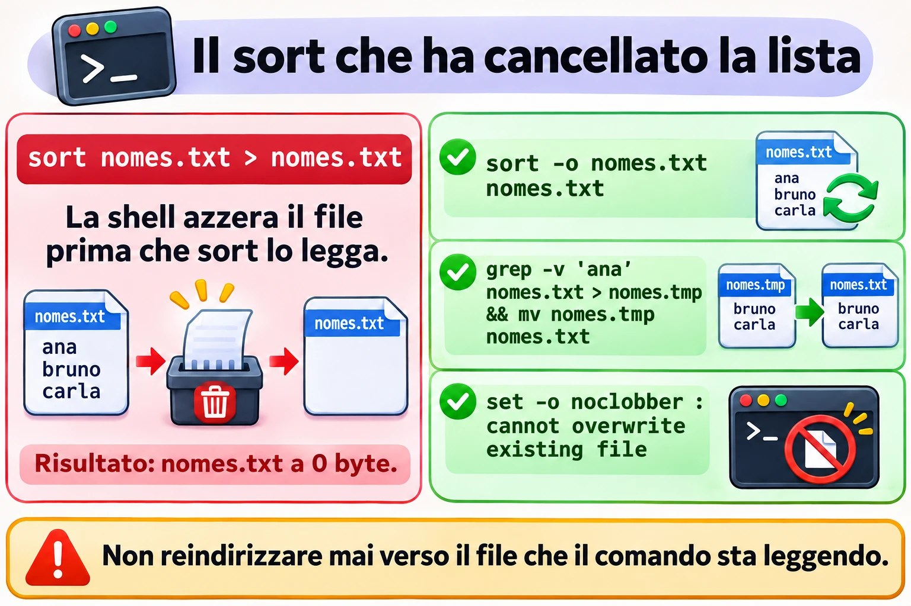

Lezione 1.6 · Redirezioni e pipe
Impari a mandare l'output di qualsiasi comando dove vuoi: un file, la fine di un file, il cestino o l'input di un altro comando. Così una domanda come "quali IP hanno sbagliato più spesso la password oggi?" diventa una riga sola, e smetti di copiare i risultati dallo schermo al Blocco note. Impari anche i modi classici per distruggere un file con un solo >, per non cascarci mai su un server di un cliente.
| Scheda | Lezione 1.6 |
|---|---|
| Modulo | M1 · Riga di comando, lezione 6 di 10 |
| Quando | Settimana 2 |
| Alla fine sei in grado di | Salvare l'output di un comando in un file senza cancellare ciò che c'era; separare gli errori dall'output normale e buttare via ciò che non interessa; creare un file intero in un colpo solo con here-doc; scrivere in un file di root senza prenderti Permission denied; costruire pipe che rispondono a domande vere, come "quanti IP diversi" e "chi compare di più"; vedere e salvare l'output allo stesso tempo con tee |
| Prerequisiti | Lezione 1.5, con ~/lab13 ancora presente nelle VM |
| Durata | Circa 2h30 |
| Snapshot | m1a6-inicio e m1a6-fim su entrambe le VM |
1 · Riscaldamento
Tre domande, a memoria, prima di leggere qualsiasi cosa. Scrivi le risposte; le soluzioni le trovi a fine lezione.
- Nella Lezione 1.5, quale comando contava le righe di
app1.logconERROR, senza mostrarle? Qual era il numero? grepnon ha trovato niente e non ha scritto niente. Come scopri, subito dopo, che non ha trovato?- Indovina:
ls /etc/hostname /naoexistemostra due righe, una normale e una di errore. Per la shell, escono entrambe dalla stessa strada?
2 · Perché conta
Mercoledì, ore 18. Devi aggiungere il nuovo server di database a /etc/hosts di una macchina di un cliente. Da root, scrivi echo '10.0.5.40 pg03' > /etc/hosts. Un solo >, dove ne servivano due. Il file ora ha una riga: la tua. localhost è sparito, e con lui i nomi degli altri server. Mezz'ora dopo, il supporto chiama: l'applicazione non trova più il vecchio database. È bastato un carattere.
Secondo caso. Un backup gira ogni giorno alle 2 con cron, con l'output che va in /var/log/backup.log. Ogni giorno il log dice backup iniciado e backup concluído. Tre settimane dopo, il cliente deve ripristinare un file, e il backup è vuoto. tar si lamentava ogni notte che la cartella non esisteva, ma si lamentava sul canale degli errori, e quel canale non finiva nel log. Nessuno se n'è accorto. Mancavano quattro caratteri nella riga di cron: 2>&1.
Terzo caso, quello bello. Venerdì, ore 17, il responsabile chiede: "quanti IP diversi hanno provato a entrare come root questa settimana, e quali sono i cinque che hanno provato di più?". Senza pipe, apri il log nell'editor e cominci a contare. Con le pipe, è una riga:
sudo grep 'Failed password for root' /var/log/secure | grep -o 'from [0-9.]*' | sort | uniq -c | sort -rn | head -5In due secondi hai la tabella da incollare nell'e-mail. Alla fine di questa lezione leggi quella riga senza sforzo e ne costruisci altre uguali.
E il quarto caso, che frega tutti una volta: sudo echo 'x' > /etc/arquivo risponde Permission denied, anche con sudo. Prima della fine della lezione sai perché, e la correzione ha tre lettere: tee.
3 · Modello mentale
Ogni programma nasce con tre canali. Dal canale 0 entra ciò che legge; dal canale 1 esce la risposta; dal canale 2 escono gli errori. Se non dici niente, lo 0 arriva dalla tastiera, e l'1 e il 2 vanno sullo schermo. Redirigere significa cambiare l'estremità di un canale. A farlo è la shell, prima che il programma parta.
┌─────────────┐
teclado ───0────► │ programa │ ───1───► tela (saída: stdout)
(stdin) │ ls, grep… │ ───2───► tela (erros: stderr)
└─────────────┘I nomi inglesi compaiono in tutta la documentazione: stdin è lo 0, stdout è l'1, stderr è il 2. Questi numeri si chiamano descrittori di file.
Perché due canali di uscita, se vanno entrambi sullo schermo? Per poterli separare. La risposta va in un file, e gli errori restano sullo schermo, o vanno in un altro file, o nel cestino:
ls /etc/hostname /naoexiste > saida.txt 2> erros.txt
┌─────────────┐ ───1───► saida.txt /etc/hostname
│ ls │
└─────────────┘ ───2───► erros.txt ls: cannot access '/naoexiste'…La pipe collega il canale 1 di un programma al canale 0 del successivo. Nota cosa non entra nella pipe:
grep 'ERROR' app1.log | wc -l
┌──────┐ ──1──►━━━━ pipe ━━━━►──0──┌──────┐ ──1──► tela: 4
│ grep │ │ wc │
└──────┘ ──2──► tela └──────┘
(os erros do grep passam por fora do pipe)La prima idea: la shell sistema i canali prima che il comando parta. Quando scrivi > arquivo, la shell apre quel file in scrittura, e aprire con > significa azzerare. Solo dopo parte il comando. Due conseguenze mettono nei guai anche gli esperti:
sort nomes.txt > nomes.txtcancella la lista. La shell azzeranomes.txt, e solo doposortva a leggere, e trova un file vuoto. Il Guasto A te lo fa vedere.sudo echo 'x' > /etc/arquivodàPermission denied.sudoeleva soloecho. A aprire/etc/arquivoè la tua shell, che gira come te, prima chesudoparta.
La seconda idea: 2>&1 si legge da sinistra a destra. Significa "il canale 2 ora punta dove punta il canale 1 adesso". Per questo l'ordine conta:
cmd > log.txt 2>&1 cmd 2>&1 > log.txt
1º 1 ──► log.txt 1º 2 ──► tela (para onde o 1 apontava)
2º 2 ──► log.txt 2º 1 ──► log.txt
resultado: tudo no log resultado: erros na tela, log sem errosLa prima forma è quella giusta. La seconda è l'errore del backup del secondo caso, e diventa il Guasto B.
La terza idea: in Linux, la pipe trasporta testo. Ogni programma della catena fa una cosa sola, e la fa bene: grep setaccia, cut taglia le colonne, sort ordina, uniq unisce i ripetuti adiacenti, wc conta, head prende la cima. Mettendo insieme pezzi piccoli, costruisci la domanda che vuoi, come con il lego.
log ─► grep ─► grep -o ─► sort ─► uniq -c ─► sort -rn ─► head
só as linhas só o pedaço conta maior primeiro o topo
que importam que interessaPonte Windows. cmd e PowerShell hanno gli stessi >, >>, 2> e 2>&1, e hanno anche la pipe. La differenza sta in ciò che passa nella pipe. In PowerShell passano oggetti con proprietà: chiedi Sort-Object Length e via. In Linux passano righe di testo, e il testo lo tagli con cut prima di ordinarlo. Sembra più primitivo, ma funziona con qualsiasi programma già scritto, e non solo con quelli che conoscono gli oggetti. Un tranello per chi vive in entrambi i mondi: in Windows PowerShell 5.1, > salva il file in UTF-16. Copia un file così su Linux, e grep può rispondere binary file matches, o semplicemente non trovare niente.


4 · Concetto a strati
Essenziale
Redirezioni. Le fa la shell; il programma non ne sa nemmeno niente.
| Scrivi | Cosa fa | Esempio |
|---|---|---|
> arq | Manda l'output, il canale 1, nel file. Crea il file, oppure azzera quello che esiste già | ls /etc > lista.txt |
>> arq | Manda l'output in fondo al file, senza cancellare niente | date >> historico.txt |
2> arq | Manda gli errori, il canale 2, nel file | find /etc -name '*.conf' 2> erros.txt |
2> /dev/null | Butta via gli errori | find /etc -name '*.conf' 2> /dev/null |
> arq 2>&1 | Output ed errori nello stesso file, in quest'ordine | bash backup.sh > backup.log 2>&1 |
>> arq 2>&1 | Lo stesso, aggiungendo in fondo | La forma giusta per cron |
&> arq | Scorciatoia di bash per > arq 2>&1 | bash backup.sh &> backup.log |
< arq | Il canale 0 legge dal file, non dalla tastiera | wc -l < app1.log |
<<'EOF' | Here-doc: il canale 0 legge il testo che arriva fino alla riga EOF | Nel Passo 5 |
> arq, senza comando | Azzera il file, oppure ne crea uno vuoto | > app.log |
/dev/null è il buco nero di Linux: tutto ciò che entra sparisce, e chi legge da lì riceve un file vuoto. Esiste su qualsiasi Linux.
La pipe. È la barra verticale. Collega il canale 1 di un comando al canale 0 del successivo, senza file in mezzo:
grep 'ERROR' app1.log | wc -l
cut -d: -f7 /etc/passwd | sort | uniq -cI filtri che vivono in mezzo alle pipe. Tutti leggono da un file, se gli dai il nome, o dal canale 0, se arrivano dopo una pipe.
| Comando | Cosa fa | Esempio |
|---|---|---|
sort | Ordina le righe in ordine alfabetico | sort nomes.txt |
sort -n | Ordina per numero: 9 prima di 10 | sort -n tamanhos.txt |
sort -r | Inverte l'ordine | sort -rn: il più grande per primo |
sort -u | Ordina e toglie le righe ripetute | sort -u ips.txt |
sort -t: -k3 -n | Ordina per la 3ª colonna, con colonne separate da : | sort -t: -k3 -n /etc/passwd |
uniq | Unisce le righe ripetute adiacenti: serve un sort prima | Sempre dopo un sort |
uniq -c | Unisce e conta quante erano | Sempre dopo un sort |
cut -d: -f1 | Taglia la 1ª colonna, con colonne separate da : | cut -d: -f1 /etc/passwd |
cut -d' ' -f3 | Taglia la 3ª colonna, separata da spazio | cut -d' ' -f3 app1.log |
tr -s ' ' | Riduce gli spazi ripetuti a uno solo | Prima di un cut -d' ' |
grep -o | Mostra solo la parte che corrisponde, una per riga | grep -o 'ip=[0-9.]*' app1.log |
wc -l | Conta le righe che arrivano | In fondo alla pipe |
head -n 5 | Solo le prime cinque | Dopo un sort -rn: la top 5 |
tee arq | Mostra sullo schermo e salva nel file | Nel Passo 8 |
tee -a arq | Lo stesso, aggiungendo in fondo | Con sudo, scrive in un file di root |
Due ricette che userai ogni giorno: sort | uniq dà lo stesso di sort -u, e sort | uniq -c | sort -rn è la ricetta della classifica.
Ponte Windows
| Linux | cmd | PowerShell |
|---|---|---|
cmd > arq | cmd > arq | cmd > arq oppure Out-File arq |
cmd >> arq | cmd >> arq | cmd >> arq oppure Out-File arq -Append |
cmd 2> arq | cmd 2> arq | cmd 2> arq |
cmd > arq 2>&1 | cmd > arq 2>&1 | cmd > arq 2>&1, oppure *> arq per tutti gli stream |
/dev/null | nul | $null oppure Out-Null |
tee arq | Non esiste | Tee-Object arq |
sort | sort | Sort-Object |
sort -u | Non esiste | Sort-Object -Unique |
uniq -c | Non esiste | Group-Object |
cut -d: -f1 | Non esiste | ForEach-Object { $_.Split(':')[0] } |
wc -l | find /c /v "" | Measure-Object -Line |
Here-doc <<'EOF' | Non esiste | Here-string @' … '@ |
Avanzato
set -o noclobberfa rifiutare a>di sovrascrivere un file che esiste già:cannot overwrite existing file. Per forzare, scrivi>|. Si disattiva conset +o noclobber. Non protegge>>, che non cancella mai.|&è la scorciatoia di bash per2>&1 |: manda output ed errori insieme al comando successivo.${PIPESTATUS[@]}eset -o pipefail. Il$?di una pipe è quello dell'ultimo comando.grep x naoexiste.txt | wc -lmostra un errore e il numero0, e$?vale 0, perchéwcha funzionato. Subito dopo,echo ${PIPESTATUS[@]}mostra2 0: il codice di ciascun pezzo. In uno script,set -o pipefailfa fallire la pipe se un pezzo qualsiasi fallisce. Lo userai nel modulo sugli script.<<<, la here-string, consegna una frase breve al canale 0:wc -w <<< 'uma frase curta'risponde 3.<<-EOFtoglie i tab all'inizio di ogni riga. Serve a indentare un here-doc dentro uno script.<(comando), la process substitution, consegna l'output di un comando come se fosse un file:diff <(sort ontem.txt) <(sort hoje.txt)confronta due elenchi senza creare file temporanei. È il modo classico per confrontare i pacchetti di due server.xargstrasforma righe in argomenti:find ~/lab13 -name '*.log' | xargs wc -lconta le righe di tutti i log in una volta. Con nomi che contengono spazi, usafind … -print0 | xargs -0 …. Il Passo 9 mostra perché.exec > arq 2>&1, dentro uno script, manda nel file tutto ciò che viene dopo. Resta per il modulo sugli script.
5 · Rocky × Debian
bash è lo stesso su entrambe, e ogni redirezione di questa lezione funziona uguale nel terminale. Le differenze compaiono in tre punti: in /bin/sh, nei programmi che metti nella pipe e nell'ordine di sort.
| Punto | Rocky 9 | Debian 13 |
|---|---|---|
Cos'è /bin/sh | bash stesso | dash, una shell più piccola e più veloce |
&> in uno script #!/bin/sh o in una riga di cron | Funziona | Si rompe in silenzio: il comando va in background, e il file resta vuoto |
| Contare i pacchetti installati | rpm -qa, contato con wc -l | dpkg -l, solo le righe che iniziano con ii, contate con wc -l |
| Gestore che si lamenta nella pipe | dnf non si lamenta | apt scrive WARNING: apt does not have a stable CLI interface sul canale 2 |
| Log per costruire pipe | /var/log/secure e /var/log/messages | journalctl, che esce già pronto per la pipe |
Ordine di sort | Dipende dalla lingua, nella variabile LANG | Uguale |
Controlla con ls -l /bin/sh su entrambe: qualcosa come /bin/sh -> bash su Rocky e /bin/sh -> dash su Debian.
La seconda riga della tabella è la più insidiosa. cron esegue ogni riga con /bin/sh. Su Debian, bash backup.sh &> backup.log diventa due cose: bash backup.sh &, che gira in background con l'output che va nell'e-mail di cron, che quasi nessuno legge, e > backup.log, che azzera soltanto il file. Il backup gira, il log resta vuoto ogni giorno, e nessuno capisce. La regola pratica: nel terminale, usa &> quanto vuoi. In script e in cron, scrivi sempre > arq 2>&1, che funziona in qualsiasi shell.
L'avviso di apt è l'esempio perfetto del perché esistono due canali. Su Debian, confronta:
apt list --installed | wc -l
apt list --installed 2> /dev/null | wc -lI due numeri sono uguali, e solo il primo mostra l'avviso sullo schermo. L'avviso è uscito dal canale 2 e ha aggirato la pipe. wc non l'ha mai visto.


&> funziona su Rocky e si rompe in silenzio nel cron di Debian: negli script e nel cron, scrivi > arq 2>&1.6 · Lab guidato
Fai tutto su entrambe le VM, tranne quando il passo dice una sola. I file stanno in ~/lab13/pipes, e la materia prima è app1.log della Lezione 1.5. In ogni passo, quando compare Prevedi, scrivi la risposta prima di premere Invio.
Passo 1 · Preparare
Sul nodo Proxmox:
qm snapshot 201 m1a6-inicio
qm snapshot 202 m1a6-inicioIn ciascuna VM:
mkdir -p ~/lab13/pipes
cd ~/lab13/pipes
wc -l ~/lab13/logs/app1.log
cp ~/lab13/logs/app1.log .
ls -lwc dovrebbe rispondere 20 /home/student/lab13/logs/app1.log. Se il numero è un altro, o il file non esiste, torna al Passo 1 della Lezione 1.5 e ricrea app1.log. La copia locale esiste perché tu possa sbagliare a volontà: l'originale resta al sicuro in ~/lab13/logs.
Passo 2 · > e >>: il file che sparisce e quello che cresce
echo 'primeira' > notas.txt
cat notas.txt
echo 'segunda' > notas.txtPrevedi. Cosa mostrerà il prossimo cat: una riga o due?
cat notas.txtSolo segunda. Il secondo > ha azzerato il file prima che echo scrivesse. Adesso aggiungi in fondo:
echo 'terceira' >> notas.txt
date >> notas.txt
cat -n notas.txtTre righe: segunda, terceira e la data. >> non cancella mai.
Adesso la promessa della Lezione 1.4: svuotare un file senza cambiare l'inode.
ls -li notas.txt
> notas.txt
ls -li notas.txt
> novo-vazio.txt
ls -l novo-vazio.txtIl numero dell'inode, nella prima colonna, è lo stesso prima e dopo, e la dimensione è scesa a 0. È così che si svuota un log che un programma sta usando: il programma continua a scrivere nello stesso file, e lo spazio torna subito. > novo-vazio.txt mostra l'altro uso: senza comando, > crea un file vuoto.
Lo stesso effetto esiste come comando, e questo conterà nel Passo 8:
echo 'de novo' > notas.txt
truncate -s 0 notas.txt
ls -l notas.txttruncate -s 0 lascia il file con dimensione zero, come > da solo.
Per il Decidi, fai una copia di hosts del sistema. Lavori sulla copia, mai sull'originale:
cp /etc/hosts hosts.txt
wc -l hosts.txtDecidi 1 · /etc/hosts. Scenario: devi aggiungere la riga 10.0.5.40 pg03 in fondo a hosts.txt, senza perdere niente di ciò che esiste già. Quale comando?
- A)
echo '10.0.5.40 pg03' > hosts.txt - B)
echo '10.0.5.40 pg03' >> hosts.txt - C)
echo '10.0.5.40 pg03' < hosts.txt - D)
cat '10.0.5.40 pg03' >> hosts.txt
Scegli la lettera prima di guardare la tabella.
| Se hai scelto | Risultato | Perché |
|---|---|---|
| A | ❌ Sbagliato | > azzera il file prima che echo giri, e resta solo la riga nuova. È il caso del mercoledì della sezione 2. |
| B | ✅ Giusto | >> aggiunge in fondo. wc -l ora mostra una riga in più, e tail -n 2 mostra la riga nuova in fondo. |
| C | ❌ Sbagliato | < collega il file all'ingresso di echo, e echo non legge mai l'input. La riga compare sullo schermo, e il file resta uguale. |
| D | ❌ Sbagliato | cat cerca un file chiamato 10.0.5.40 pg03, risponde No such file or directory, e non viene aggiunto niente. |
Da ricordare: prima di premere Invio su una riga con >, leggi il > ad alta voce come "azzera". Se non era quello che volevi, ne servono due.
Esegui la B e controlla:
echo '10.0.5.40 pg03' >> hosts.txt
tail -n 2 hosts.txt
wc -l hosts.txtPasso 3 · Il canale 2: gli errori non vanno nel file
ls /etc/hostname /naoexisteDue righe: il nome del file e l'errore. Adesso manda l'output in un file.
Prevedi. Con > saida.txt, cosa compare ancora sullo schermo?
ls /etc/hostname /naoexiste > saida.txt
cat saida.txtL'errore resta sullo schermo: ls: cannot access '/naoexiste': No such file or directory. saida.txt contiene solo /etc/hostname. > ha deviato il canale 1; il canale 2 ha continuato a puntare allo schermo. Adesso separa i due e poi butta via gli errori:
ls /etc/hostname /naoexiste 2> erros.txt
cat erros.txt
ls /etc/hostname /naoexiste > saida.txt 2> erros.txt
ls /etc/hostname /naoexiste 2> /dev/nullL'ultimo è il più usato nella vita reale. Un esempio che ripeterai spesso: find come utente normale si lamenta di ogni cartella che non può aprire.
find /etc -name '*.conf' | wc -l
find /etc -name '*.conf' 2> /dev/null | wc -lIl primo riempie lo schermo di find: '/etc/sudoers.d': Permission denied e di altre cartelle chiuse, e alla fine mostra un numero. Il secondo mostra solo il numero. L'elenco esatto delle cartelle cambia tra Rocky e Debian.
Decidi 2 · Il numero che non è cambiato. Scenario: ti aspettavi che il primo numero fosse più grande, perché le righe di errore "erano nell'output". Ma i due numeri sono uguali. Perché?
- A)
wcignora le righe che iniziano confind: - B) Gli errori sono usciti dal canale 2, che aggira la pipe;
wcha ricevuto solo il canale 1 - C)
2> /dev/nullnon funziona confind - D) La seconda esecuzione ha usato una cache, per questo è uguale
Scegli la lettera prima di guardare la tabella.
| Se hai scelto | Risultato | Perché |
|---|---|---|
| A | ❌ Sbagliato | wc non legge il contenuto per decidere cosa contare: conta ogni riga che arriva. Le righe di errore semplicemente non sono arrivate. |
| B | ✅ Giusto | La pipe collega solo il canale 1. Gli errori sono andati dritti sullo schermo, in entrambi i casi. wc ha contato esattamente la stessa cosa. |
| C | ❌ Sbagliato | Funziona: la seconda volta, gli errori sono spariti dallo schermo. Il numero uguale ha un'altra causa. |
| D | ❌ Sbagliato | Non c'è nessuna cache. find ha percorso di nuovo le cartelle, e l'elenco dei file era lo stesso. |
Da ricordare: la pipe porta solo il canale 1. Se vuoi gli errori dentro la pipe, scrivi 2>&1 prima della pipe.
Controlla:
find /etc -name '*.conf' 2>&1 | wc -lAdesso il numero è più grande: sono entrate le righe di errore.
Passo 4 · Output ed errori insieme, e l'ordine che cambia tutto
ls /etc/hostname /naoexiste > tudo.txt 2>&1
cat tudo.txt
ls /etc/hostname /naoexiste &> tudo2.txt
cat tudo2.txtEntrambi i file hanno le due righe. Di solito ls scrive prima l'errore, perché si lamenta dei nomi che non esistono prima di elencare quelli che esistono.
Prevedi. Adesso l'ordine invertito. Dove comparirà l'errore?
ls /etc/hostname /naoexiste 2>&1 > errado.txt
cat errado.txtL'errore compare sullo schermo, e errado.txt contiene solo /etc/hostname. Torna al disegno della sezione 3: nel momento del 2>&1, il canale 1 puntava ancora allo schermo, quindi il 2 è andato sullo schermo. Solo dopo l'1 è andato nel file.
La stessa regola, usata a tuo favore: contare solo gli errori di find.
find /etc -name '*.conf' 2>&1 > /dev/null | wc -lLeggi da sinistra a destra. Il 2 va dove punta l'1 adesso, la pipe. Poi l'1 va nel cestino. Solo gli errori arrivano a wc: qualcosa come 3-6, a seconda della VM.
Infine, l'accumulo, che è la forma di cron:
date >> exec.log 2>&1
ls /naoexiste >> exec.log 2>&1
date >> exec.log 2>&1
cat exec.logTre righe: la data, l'errore e la data. Ogni esecuzione aggiunge in fondo, niente si perde, e gli errori restano registrati nell'ordine in cui sono avvenuti.
Decidi 3 · Salvare tutto. Scenario: stai per lanciare un comando lungo e vuoi output ed errori in upd.log, da leggere dopo con calma. Quale riga?
- A)
cmd 2>&1 > upd.log - B)
cmd > upd.log 2>1 - C)
cmd > upd.log 2>&1 - D)
cmd > upd.log 2> upd.log
Scegli la lettera prima di guardare la tabella.
| Se hai scelto | Risultato | Perché |
|---|---|---|
| A | ❌ Sbagliato | L'ordine è invertito: il 2 va sullo schermo, dove puntava l'1, e solo l'output va nel file. |
| B | ❌ Sbagliato | Senza la &, l'1 è un nome di file. Gli errori vanno in un file chiamato 1. Prova con ls /naoexiste > upd.log 2>1 e poi ls -l 1. |
| C | ✅ Giusto | Prima l'1 va in upd.log; poi il 2 va dove punta l'1. Tutto nello stesso file, nell'ordine giusto. |
| D | ❌ Sbagliato | I due canali aprono lo stesso file separatamente, ciascuno scrivendo dall'inizio. Uno scrive sopra l'altro, e il testo esce rimescolato. Prova con ls /etc/hostname /naoexiste > d.txt 2> d.txt e cat d.txt. |
Da ricordare: la & in 2>&1 dice "è un canale, non un file". E l'ordine è sempre: prima la destinazione, poi 2>&1.
Se hai provato la B e la D, pulisci: rm -v 1 d.txt.


wc conta dipende da dove vanno gli errori.Passo 5 · L'input: < e il here-doc
wc -l app1.log
wc -l < app1.logIl primo risponde 20 app1.log; il secondo, solo 20. Con <, a aprire il file è la shell, e wc riceve solo il contenuto, senza sapere il nome. È la forma che usi negli script, quando vuoi solo il numero: total=$(wc -l < app1.log).
Alcuni programmi sanno leggere solo dal canale 0. tr, che sostituisce caratteri, è il più comune:
tr 'a-z' 'A-Z' app1.log
tr 'a-z' 'A-Z' < app1.log | head -n 3Il primo risponde tr: extra operand 'app1.log'. Il secondo mostra le prime tre righe in maiuscolo. Nota CONEXãO: tr sostituisce solo le lettere da a a z, senza accenti.
Adesso il here-doc, che usi dalla Lezione 1.5 come ricetta:
cat > app.conf <<'EOF'
# configuração da aplicação
PORTA=8080
MODO=producao
LOG=/var/log/app/app.log
EOF
cat -n app.confOgni pezzo ha una funzione. <<'EOF' dice alla shell: leggi le prossime righe finché non trovi una riga con solo EOF e consegna tutto sul canale 0. cat senza nome di file legge dal canale 0 e scrive sul canale 1. > app.conf manda il canale 1 nel file. La parola EOF è solo un'abitudine; va bene qualsiasi parola, purché la riga finale contenga solo quella, senza spazi prima né dopo.
È il modo più sicuro per incollare una configurazione pronta su un server via SSH: niente editor, niente righe tagliate a metà.
Prevedi. Le due versioni qui sotto differiscono solo per le virgolette di EOF. Cosa mostra ciascuna?
cat <<EOF
Usuário: $USER
Pasta: $HOME
Hoje: $(date +%F)
EOF
cat <<'EOF'
Usuário: $USER
Pasta: $HOME
Hoje: $(date +%F)
EOFLa prima sostituisce ogni $ con il valore: qualcosa come Usuário: student, Pasta: /home/student e la data di oggi. La seconda mostra il testo esattamente come è stato scritto, con i dollari. Senza virgolette, la shell riempie le variabili; con le virgolette, non tocca niente.
Decidi 4 · Lo script che ha perso $1. Scenario: crei uno script dal terminale e lo provi:
cat > saudacao.sh <<EOF
#!/bin/bash
echo "Olá, $1"
EOF
bash saudacao.sh AnaLa risposta è solo Olá, , senza il nome. Perché?
- A) Lo script ha bisogno di
chmod +xper leggere$1 - B) Senza virgolette su
EOF, la shell ha sostituito$1con il suo valore al momento di creare il file, e il valore era vuoto - C) Il here-doc non accetta le virgolette doppie al suo interno
- D)
$1funziona solo quando lo script gira come./saudacao.sh
Scegli la lettera prima di guardare la tabella.
| Se hai scelto | Risultato | Perché |
|---|---|---|
| A | ❌ Sbagliato | Con bash saudacao.sh, lo script gira senza chmod. Il problema sta dentro il file, non nel permesso. |
| B | ✅ Giusto | cat saudacao.sh mostra echo "Olá, ": il $1 è sparito prima che lo script esistesse. Nel tuo terminale, $1 era vuoto. |
| C | ❌ Sbagliato | Il here-doc accetta qualsiasi testo, con virgolette semplici o doppie. |
| D | ❌ Sbagliato | $1 è il primo argomento in entrambi i modi di eseguire. |
Da ricordare: un here-doc che scrive uno script o una configurazione con dei $ dentro vuole sempre <<'EOF', con le virgolette. Senza virgolette, solo quando vuoi che la shell riempia le variabili.
Ripara e prova:
cat saudacao.sh
cat > saudacao.sh <<'EOF'
#!/bin/bash
echo "Olá, $1"
EOF
cat saudacao.sh
bash saudacao.sh AnaAdesso la risposta è Olá, Ana.
Passo 6 · Pipe: contare, ordinare, unire
Comincia da ciò che sai già, in due modi:
grep -c 'ERROR' app1.log
grep 'ERROR' app1.log | wc -lEntrambi rispondono 4. Adesso il dubbio rimasto dalla Lezione 1.5, righe contro occorrenze:
echo 'ERROR ERROR ERROR' | grep -c 'ERROR'
echo 'ERROR ERROR ERROR' | grep -o 'ERROR' | wc -lIl primo risponde 1, perché è una riga. Il secondo risponde 3: grep -o mette ogni occorrenza su una riga a sé, e wc -l conta queste righe.
Adesso una domanda vera: quali IP compaiono nel log, e quante volte? Costruisci la pipe un pezzo alla volta, guardando l'output a ogni passo:
grep -o 'ip=[0-9.]*' app1.log
grep -o 'ip=[0-9.]*' app1.log | sort
grep -o 'ip=[0-9.]*' app1.log | sort | uniq -c[0-9.] significa "una cifra o un punto", e *, "quanti ne arrivano". Le espressioni regolari hanno una lezione tutta loro; per ora, usale come ricetta. L'ultimo comando mostra qualcosa come:
1 ip=10.0.5.10
1 ip=10.0.5.21
1 ip=10.0.5.30
3 ip=203.0.113.50E quanti IP diversi:
grep -o 'ip=[0-9.]*' app1.log | sort -u | wc -lRisponde 4. È il conteggio che la Lezione 1.5 aveva promesso.
Prevedi. Adesso gli utenti, ma senza sort. Quante volte comparirà la parola ana nell'output del secondo comando?
grep -o 'usuario=[a-z]*' app1.log
grep -o 'usuario=[a-z]*' app1.log | uniq -cQualcosa come:
1 usuario=ana
2 usuario=root
1 usuario=admin
1 usuario=bruno
1 usuario=ana
1 usuario=studentana compare due volte, con 1 in ciascuna. uniq confronta solo una riga con la precedente: le due righe di root erano vicine e sono diventate una; le due di ana erano separate e sono rimaste separate. Con sort prima, gli uguali diventano adiacenti:
grep -o 'usuario=[a-z]*' app1.log | sort | uniq -c
grep -o 'usuario=[a-z]*' app1.log | sort | uniq -c | sort -rn
grep -o 'usuario=[a-z]*' app1.log | sort | uniq -c | sort -rn | head -n 2L'ultimo è la ricetta della classifica, la top 2: root e ana, con 2 ciascuno.
Decidi 5 · Quanti IP diversi. Scenario: il responsabile vuole sapere quanti IP diversi compaiono in app1.log. Quale comando dà la risposta giusta, oggi e su qualsiasi log?
- A)
grep -c 'ip=' app1.log - B)
grep -o 'ip=[0-9.]*' app1.log | uniq | wc -l - C)
grep -o 'ip=[0-9.]*' app1.log | sort -u | wc -l - D)
grep -o 'ip=[0-9.]*' app1.log | wc -l
Scegli la lettera prima di guardare la tabella.
| Se hai scelto | Risultato | Perché |
|---|---|---|
| A | ❌ Sbagliato | Risponde 6: conta le righe che hanno un IP, e 203.0.113.50 entra tre volte. |
| B | ❌ Incompleto | Qui dà 4 per fortuna, perché le tre righe di 203.0.113.50 sono vicine. In un log vero, con gli IP alternati, il conto esce più alto della realtà. |
| C | ✅ Giusto | sort -u ordina e toglie i ripetuti, ovunque siano. wc -l conta ciò che resta: 4. |
| D | ❌ Sbagliato | Risponde 6: conta tutte le occorrenze, con ripetizioni. |
Da ricordare: "diversi" è sort -u, oppure sort e poi uniq, e solo dopo wc -l. uniq da solo vede soltanto il vicino.


Passo 7 · Colonne con cut, e il doppio spazio
/etc/passwd è il file perfetto per allenarsi: una riga per utente, sette colonne separate da :. Utente, password, che oggi è solo una x, UID, GID, commento, cartella personale e shell. I dettagli restano per la lezione sugli utenti.
head -n 3 /etc/passwd
cut -d: -f1 /etc/passwd | head -n 5
cut -d: -f1,7 /etc/passwd | tail -n 3
cut -d: -f7 /etc/passwd | sort | uniq -c | sort -rn
sort -t: -k3 -n /etc/passwd | tail -n 3Il quarto comando risponde a "quali shell hanno gli utenti, e quanti per ciascuna". Qualcosa come, su Rocky:
17 /sbin/nologin
2 /bin/bash
1 /sbin/shutdown
1 /sbin/halt
1 /bin/syncSu Debian, il più comune è /usr/sbin/nologin, e i numeri cambiano. Ciò che conta: solo chi ha una shell vera, come /bin/bash, riesce a entrare e a digitare comandi. È una domanda di audit a cui risponderai sui server dei clienti. L'ultimo comando ordina per UID, la terza colonna, come numero, e mostra i tre più grandi: student e, in fondo, nobody, con 65534.
Adesso app1.log, le cui colonne sono separate da spazio. La terza è il livello:
cut -d' ' -f3 app1.log | sort | uniq -cQualcosa come:
1 error
4 ERROR
11 INFO
4 WARNL'ordine dipende dalla lingua del sistema: con LANG=C, ERROR viene prima e error per ultimo.
Prevedi. La quarta colonna dovrebbe essere il servizio: web:, db:, auth:. Cosa compare nelle prime sei righe?
cut -d' ' -f4 app1.log | head -n 6
cut -d' ' -f4 app1.log | head -n 6 | cat -AQuattro righe vuote e due con auth:. cat -A conferma: quattro $ da soli. Guarda di nuovo il log: dopo INFO e dopo WARN ci sono due spazi, per allinearsi con ERROR. Per cut, ogni spazio separa una colonna, quindi tra i due spazi c'è una colonna vuota. Nelle righe di ERROR, con un solo spazio, la quarta colonna è il servizio.
La riparazione è unire gli spazi prima di tagliare:
tr -s ' ' < app1.log | cut -d' ' -f4 | head -n 6Adesso sì: web:, db:, web:, auth:, auth:, auth:. Nella lezione su awk vedrai che lui tratta già più spazi come uno solo.
Decidi 6 · Il report per livello. Scenario: il responsabile vuole sapere quante righe ci sono per ogni livello in app1.log, e l'error in minuscolo deve contare insieme a ERROR. Quale comando?
- A)
cut -d' ' -f3 app1.log | uniq -c - B)
cut -d' ' -f3 app1.log | sort | uniq -c - C)
cut -d' ' -f3 app1.log | tr 'a-z' 'A-Z' | sort | uniq -c - D)
cut -d' ' -f4 app1.log | sort | uniq -c
Scegli la lettera prima di guardare la tabella.
| Se hai scelto | Risultato | Perché |
|---|---|---|
| A | ❌ Sbagliato | Senza sort, uniq unisce solo i vicini, e INFO compare spezzettato su più righe. |
| B | ❌ Incompleto | Il conteggio è giusto, ma mostra error e ERROR separati. Il responsabile li voleva insieme. |
| C | ✅ Giusto | tr mette tutto in maiuscolo prima di ordinare e contare: 5 ERROR, 11 INFO e 4 WARN. |
| D | ❌ Sbagliato | La quarta colonna è il servizio, e arriva vuota nelle righe con doppio spazio. Non è nemmeno il livello. |
Da ricordare: normalizza prima di contare. Maiuscole con tr 'a-z' 'A-Z', spazi con tr -s ' ', e sempre sort prima di uniq. Un'altra forma della C: sort -f con uniq -ci, che ignorano le maiuscole.
Passo 8 · tee, e scrivere dove scrive solo root
tee è un raccordo a T da idraulico: copia in un file tutto ciò che passa e lascia proseguire il flusso.
grep 'ERROR' app1.log | tee erros-hoje.txt | wc -l
cat erros-hoje.txt
grep 'WARN' app1.log | tee -a erros-hoje.txt
wc -l erros-hoje.txtIl primo comando mostra solo il 4, ma il file contiene le quattro righe. Il terzo mostra gli avvisi sullo schermo e li aggiunge al file, che arriva a 8 righe. Nella vita reale, è così che segui un comando lungo sullo schermo e salvi tutto per il ticket allo stesso tempo.
Adesso il caso di sudo. Crea una cartella in cui può scrivere solo root:
sudo mkdir -p /opt/lab16
ls -ld /opt/lab16
echo 'PORTA=8080' > /opt/lab16/app.confQualcosa come bash: /opt/lab16/app.conf: Permission denied. Normale: la cartella è di root.
Prevedi. E con sudo davanti?
sudo echo 'PORTA=8080' > /opt/lab16/app.confLo stesso Permission denied. Torna alla prima idea della sezione 3: la tua shell, che gira come te, prova ad aprire il file per il > prima che sudo parta. sudo eleverebbe solo echo, che non arriva nemmeno a girare.
La correzione è chiedere a un programma che gira come root di aprire il file. tee lo fa:
echo 'PORTA=8080' | sudo tee /opt/lab16/app.conf
echo 'MODO=producao' | sudo tee -a /opt/lab16/app.conf > /dev/null
cat /opt/lab16/app.conf
ls -l /opt/lab16/app.confIl primo mostra PORTA=8080 sullo schermo: è la copia che tee lascia passare. Nel secondo, il > /dev/null butta via quella copia, e lo schermo resta pulito. Quel > può essere tuo, senza root, perché scrive in /dev/null, non nel file di root. Il file finale ha due righe e appartiene a root.
Per un file intero come root, unisci sudo tee e here-doc:
sudo tee /opt/lab16/limites.conf > /dev/null <<'EOF'
# limites da aplicação
MAX_CONEXOES=200
TIMEOUT=30
EOF
cat /opt/lab16/limites.confE per svuotare un file di root, il comando che hai visto nel Passo 2:
sudo truncate -s 0 /opt/lab16/limites.conf
ls -l /opt/lab16/limites.confEsiste anche sudo sh -c 'echo PORTA=8080 > /opt/lab16/app.conf', che esegue un'intera shell come root. Funziona, ma le virgolette si complicano in fretta. Preferisci tee.
Decidi 7 · /var pieno. Scenario: /var è al 98%. /var/log/app/app.log pesa 4 GB, e l'applicazione ci sta scrivendo adesso. Devi liberare spazio subito, senza fermare l'applicazione, e la storia del log può andarsene. Quale comando?
- A)
sudo rm /var/log/app/app.log - B)
sudo > /var/log/app/app.log - C)
sudo truncate -s 0 /var/log/app/app.log - D)
sudo mv /var/log/app/app.log /tmp/
Scegli la lettera prima di guardare la tabella.
| Se hai scelto | Risultato | Perché |
|---|---|---|
| A | ❌ Sbagliato | È la Lezione 1.4: rm toglie il nome, ma l'applicazione continua a tenere l'inode. Lo spazio non torna, e lei continua a scrivere in un file senza nome. |
| B | ❌ Sbagliato | A fare il > è la tua shell, senza root: Permission denied, e non cambia niente. sudo senza comando non arriva nemmeno a girare. |
| C | ✅ Giusto | truncate gira come root e azzera lo stesso inode. Lo spazio torna subito, e l'applicazione continua a scrivere nello stesso file. |
| D | ❌ Sbagliato | Se /tmp è sullo stesso file system, non cambia niente: è la Lezione 1.4. Se è su un altro, mv copia 4 GB e cancella l'originale, e lo spazio di /var resta bloccato, perché l'applicazione tiene ancora l'inode. |
Da ricordare: per azzerare un file di root, usa sudo truncate -s 0. Per scrivere in un file di root, manda il testo nella pipe a sudo tee, o sudo tee -a per aggiungere in fondo. E non usare mai rm su un log aperto.


Passo 9 · xargs: da righe ad argomenti
La pipe consegna testo sul canale 0. Ma molti comandi, come wc, ls e rm, si aspettano nomi di file come argomenti, e non sul canale 0. xargs fa da ponte: legge righe e le consegna come argomenti al comando che viene dopo di lui.
find ~/lab13 -name '*.log' | wc -l
find ~/lab13 -name '*.log' | xargs wc -lIl primo conta quanti file .log esistono, perché wc ha ricevuto l'elenco dei nomi come testo. Il secondo conta le righe dentro ogni file, con un totale in fondo, perché wc ha ricevuto i nomi come argomenti, come se li avessi digitati tu.
Adesso la trappola. Crea un log con uno spazio nel nome, come relatorio final.txt della Lezione 1.3:
echo 'teste' > ~/lab13/pipes/'relatorio final.log'
find ~/lab13 -name '*.log' | xargs wc -lQualcosa come wc: /home/student/lab13/pipes/relatorio: No such file or directory e wc: final.log: No such file or directory. xargs separa gli argomenti per spazio, e un nome è diventato due. La correzione:
find ~/lab13 -name '*.log' -print0 | xargs -0 wc -l-print0 separa i nomi con un carattere nullo, che nessun nome di file può contenere, e -0 dice a xargs di separare con quello. Adesso relatorio final.log compare con 1 riga.
Decidi 8 · La pulizia dei .tmp. Scenario: su un file server, devi cancellare tutti i .tmp di /srv/dados. Alcuni nomi hanno uno spazio, come relatorio final.tmp, ed esiste anche un file importante chiamato solo relatorio. Quale comando?
- A)
find /srv/dados -name '*.tmp' | xargs rm - B)
find /srv/dados -name '*.tmp' -print0 | xargs -0 rm - C)
rm $(find /srv/dados -name '*.tmp') - D)
find /srv/dados -name '*.tmp' | rm
Scegli la lettera prima di guardare la tabella.
| Se hai scelto | Risultato | Perché |
|---|---|---|
| A | ❌ Sbagliato | relatorio final.tmp diventa due argomenti: relatorio e final.tmp. Viene cancellato il relatorio importante, e il .tmp resta. |
| B | ✅ Giusto | Con -print0 e -0, ogni nome arriva intero a rm, spazio compreso. |
| C | ❌ Sbagliato | Lo stesso problema della A: la shell spezza l'output di find sugli spazi prima di consegnarlo a rm. |
| D | ❌ Sbagliato | rm non legge nomi dal canale 0: risponde rm: missing operand, e non viene cancellato niente. |
Da ricordare: quando la pipe porta nomi di file a xargs, usa sempre -print0 con -0. E, prima di qualsiasi rm, esegui la stessa riga con ls -l al suo posto e leggi l'elenco.
Nel lab, fai solo il controllo, senza cancellare niente:
find ~/lab13 -name '*.log' -print0 | xargs -0 ls -lProtocollo · Costruire una pipe senza errori
- Esegui da solo il primo pezzo e guarda l'output. Se non contiene ciò che vuoi, nessun pezzo successivo lo sistema.
- Aggiungi un pezzo alla volta. Usa la freccia su e finisci con
| headmentre provi. - Normalizza prima di contare:
grep -oisola il pezzo,tr -s ' 'unisce gli spazi,tr 'a-z' 'A-Z'uniforma le maiuscole. sortsempre prima diuniq. La classifica èsort | uniq -c | sort -rn | head.- Solo alla fine, salva il risultato: in un file nuovo o con
>>, mai nel file che stai leggendo. Se la destinazione è di root, usasudo tee.


7 · Rompi e ripara
Due guasti che succedono davvero, e spesso. Nessuno dei due dà errore sul momento, ed è questo che li rende pericolosi. Fai tutto in ~/lab13/pipes, su entrambe le VM.
Guasto A · Il sort che ha cancellato la lista
Rompi.
cd ~/lab13/pipes
printf '%s\n' carla ana bruno ana davi > nomes.txt
cp nomes.txt nomes.bak
cat nomes.txt
sort nomes.txt > nomes.txtVolevi ordinare la lista "sul posto", salvando il risultato nel file stesso. Il prompt è tornato senza nessun messaggio.
Prevedi. Prima di guardare: cosa mostra ora cat nomes.txt? I cinque nomi in ordine, i cinque nell'ordine vecchio, o niente?
Scopri.
cat nomes.txt
wc -l nomes.txt
ls -l nomes.txt nomes.bakcat non mostra niente, wc risponde 0 nomes.txt, e ls -l mostra 0 byte in nomes.txt e 25 in nomes.bak. La lista è sparita.
Decidi 9 · Perché è sparita. Scenario: sort nomes.txt > nomes.txt ha lasciato il file vuoto, senza nessun messaggio di errore. Qual è la spiegazione?
- A)
sortha tolto i nomi ripetuti e, insieme, si è portato via gli altri. - B) La shell ha aperto
nomes.txtper il>e lo ha azzerato prima chesortpartisse.sortha letto un file vuoto e non ha scritto niente. - C)
sortscrive in un file solo con-o. Con>, l'output si perde. - D)
sortsta ancora girando in background e scriverà tra poco.
Scegli la lettera prima di guardare la tabella.
| Se hai scelto | Risultato | Perché |
|---|---|---|
| A | ❌ Sbagliato | sort toglie i ripetuti solo con -u. E, anche con -u, resterebbero quattro nomi. |
| B | ✅ Giusto | È la prima idea della sezione 3: la shell prepara i canali prima di eseguire il comando. Aprire con > azzera il file subito, e sort arriva tardi. |
| C | ❌ Sbagliato | Con >, l'output va nel file, sì. Il problema è il momento in cui la shell apre quel file. -o è la correzione, non la causa. |
| D | ❌ Sbagliato | Senza & in fondo, il comando gira in primo piano, e il prompt torna solo quando finisce. Il file è già vuoto, e resterà così. |
Da ricordare: non redirigere mai verso il file che il comando sta leggendo. Vale per sort, grep, tr, cut, qualsiasi comando.
Ripara. Recupera la lista da .bak e ordina nel modo giusto:
cp nomes.bak nomes.txt
sort -o nomes.txt nomes.txt
cat nomes.txt-o è di sort stesso: legge prima tutto l'input e solo dopo apre il file di output. Adesso compaiono ana, ana, bruno, carla e davi. Per qualsiasi altro comando, il modo universale è un file temporaneo:
cp nomes.bak nomes.txt
grep -v 'ana' nomes.txt > nomes.tmp && mv nomes.tmp nomes.txt
cat nomes.txt&& esegue mv solo se grep è andato bene. Restano carla, bruno e davi.
E per non cascarci di nuovo, la shell ha un blocco, noclobber:
cp nomes.bak nomes.txt
set -o noclobber
sort nomes.txt > nomes.txt
wc -l nomes.txtQualcosa come bash: nomes.txt: cannot overwrite existing file, e il file resta con 5 righe. Con il blocco attivo, > si rifiuta di sovrascrivere un file che esiste già. Per forzare, usa >|. >> continua a funzionare, perché non cancella niente. Per disattivare il blocco:
set +o noclobberUn dettaglio: cat nomes.txt >> nomes.txt dà cat: nomes.txt: input file is output file. Il cat di GNU si accorge di questo caso e si rifiuta. Con > non c'è niente di cui accorgersi: quando il comando parte, il file è già stato azzerato.
Verifica.
wc -l nomes.txt
diff nomes.txt nomes.bak && echo 'igual ao backup'Cinque righe e igual ao backup.


sort legga: tre modi di ordinare senza perdere la lista.Guasto B · Il log di backup che mente
Rompi. Crea uno script di backup con un errore voluto: una delle cartelle non esiste.
cd ~/lab13/pipes
cat > backup.sh <<'EOF'
#!/bin/bash
echo "$(date +%T) backup iniciado"
tar -czf /tmp/backup-lab.tar.gz ~/lab13/logs ~/lab13/naoexiste
echo "$(date +%T) backup concluído"
EOF
bash backup.sh > backup.logEOF tra virgolette conserva $(date +%T) e ~ come testo, perché vengano calcolati quando lo script gira. Sullo schermo compare qualcosa come:
tar: Removing leading `/' from member names
tar: /home/student/lab13/naoexiste: Cannot stat: No such file or directory
tar: Exiting with failure status due to previous errorsPrevedi. Cosa dice backup.log? E il codice di uscita dello script, è 0 o no?
Scopri.
cat backup.log
bash backup.sh > backup.log 2> /dev/null
echo $?Il log contiene qualcosa come:
10:42:01 backup iniciado
10:42:01 backup concluídoE echo $? risponde 0. Il log dice che è andato tutto bene, e anche il codice di uscita. L'errore di tar è uscito dal canale 2, sullo schermo, e in cron non c'è schermo: nessuno l'avrebbe visto. Nella vita reale, è così che si scopre, il giorno del disastro, che il backup falliva da mesi.
Adesso il tentativo con l'ordine sbagliato:
bash backup.sh 2>&1 > backup.log
cat backup.logGli errori restano sullo schermo, e il log resta pulito. 2>&1 ha copiato la destinazione del canale 1 nel momento in cui è stato letto, quando il canale 1 puntava ancora allo schermo.
Decidi 10 · La riga del crontab. Scenario: stai per pianificare backup.sh in cron, ogni giorno alle 2. Ogni esecuzione deve aggiungere a backup.log i messaggi normali e gli errori, insieme e in ordine. Quale redirezione?
- A)
bash backup.sh > backup.log 2>&1 - B)
bash backup.sh 2>&1 >> backup.log - C)
bash backup.sh >> backup.log 2>&1 - D)
bash backup.sh &>> backup.log
Scegli la lettera prima di guardare la tabella.
| Se hai scelto | Risultato | Perché |
|---|---|---|
| A | ❌ Incompleto | Unisce i due canali nell'ordine giusto, ma > azzera il log a ogni esecuzione. Domani vedi solo la notte di oggi. |
| B | ❌ Sbagliato | È l'ordine sbagliato: gli errori vanno dove cron manda l'output, cioè un'e-mail locale che nessuno legge o da nessuna parte. |
| C | ✅ Giusto | >> aggiunge il canale 1 al log, e 2>&1 manda il canale 2 nello stesso posto. Funziona in qualsiasi shell. |
| D | ❌ Sbagliato | Su Rocky funziona, perché lo sh di cron è bash. Su Debian cron usa dash, che legge la & come "esegui in background": il backup gira per conto suo, l'output va nell'e-mail di cron, e il log non riceve niente. |
Da ricordare: nel crontab è sempre >> arquivo 2>&1, in quest'ordine, e con percorsi completi, perché cron non sa in quale cartella ti trovi. La riga completa sarebbe così, ma non installarla adesso; cron ha una lezione tutta sua:
0 2 * * * /bin/bash /home/student/lab13/pipes/backup.sh >> /home/student/lab13/pipes/backup.log 2>&1Ripara. Esegui con la redirezione giusta:
bash backup.sh >> backup.log 2>&1
cat backup.logAdesso l'errore di tar compare nel log, tra "iniciado" e "concluído". Ma nota: lo script scrive ancora "concluído" dopo l'errore, e il codice di uscita resta 0, perché l'ultimo comando è echo, che va sempre a buon fine. Lo script mente in un altro modo. La correzione, con set -e, set -o pipefail e il test di $?, arriva nel modulo sugli script. Per ora, l'abitudine: leggi tutto il log, non solo l'ultima riga.
Verifica.
grep -c 'Cannot stat' backup.log
tail -n 5 backup.loggrep -c risponde 1: solo l'ultima esecuzione ha conservato l'errore. Le tre precedenti hanno scritto un log pulito, che mentiva.
E lo snapshot?
Nessuno dei due guasti ne ha avuto bisogno, ed è questa la lezione. Nel Guasto A, hai recuperato la lista solo perché avevi fatto nomes.bak. Su un server vero, ripristinare l'intera VM per recuperare un file annulla tutto ciò che è successo dopo, compreso il lavoro degli utenti. L'abitudine che salva è cp arquivo arquivo.bak prima di mettere mano, oppure sort -o. Nel Guasto B, nessuno snapshot aiuta: il danno è non sapere che il backup falliva. Solo 2>&1 al posto giusto risolve.
Bonus Debian
Prima, &> in sh, che su Debian è dash. Esegui su entrambe le VM e confronta:
sh -c 'ls /etc/hostname /naoexiste &> amp.txt'
cat amp.txtSu Rocky, amp.txt contiene le due righe, l'output e l'errore. Su Debian, le due righe compaiono sullo schermo, e amp.txt resta vuoto: dash ha eseguito ls in background e poi ha creato il file vuoto con > amp.txt. È esattamente ciò che succede in uno script sh o nel cron di Debian.
Poi, i pacchetti, usando ciò che hai imparato oggi:
[ "$(hostname)" = debian-lab ] && dpkg -l | grep '^ii' | wc -l
[ "$(hostname)" = debian-lab ] && dpkg -l | grep '^ii' | tr -s ' ' | cut -d' ' -f2 | head -n 5Il primo conta i pacchetti installati. Il secondo unisce gli spazi e taglia la seconda colonna, il nome del pacchetto. È il problema del doppio spazio del Passo 7, su un file vero.
Infine, i login via SSH, che su Debian stanno solo nel journal:
[ "$(hostname)" = debian-lab ] && sudo journalctl -u ssh --no-pager | grep -c 'Accepted'Quanti login sono andati a buon fine dall'ultimo boot. Per vedere i fallimenti, generane alcuni nel lab: esegui ssh errado@127.0.0.1 e digita una password qualsiasi sbagliata, tre volte. Poi:
[ "$(hostname)" = debian-lab ] && sudo journalctl -u ssh --no-pager | grep 'Failed password' | grep -o 'from [0-9.]*' | sort | uniq -cQualcosa come 3 from 127.0.0.1.
Bonus Rocky
[ "$(hostname)" = rocky-lab ] && rpm -qa | wc -l
[ "$(hostname)" = rocky-lab ] && rpm -qa | sort | head -n 5
[ "$(hostname)" = rocky-lab ] && rpm -qa --last | head -n 5Quanti pacchetti, i primi cinque in ordine alfabetico e i cinque installati più di recente. Adesso la pipe della storia del responsabile, della sezione 2. Genera i fallimenti come nel bonus di Debian, con ssh errado@127.0.0.1, ed esegui:
[ "$(hostname)" = rocky-lab ] && sudo grep 'Failed password' /var/log/secure | grep -o 'from [0-9.]*' | sort | uniq -c | sort -rnQualcosa come 3 from 127.0.0.1. Su un server esposto a internet, questa stessa riga mostra, in pochi secondi, chi sta cercando di indovinare la password di root.
La lezione
La shell prepara i canali prima di eseguire il comando: > azzera il file prima che qualcuno lo legga. E chi non manda il canale 2 nel log perde proprio il messaggio che contava. Nessuno dei due guasti avvisa sul momento, quindi ciò che protegge è l'abitudine: sort -o o un file temporaneo, >> log 2>&1 in tutto ciò che gira da solo, e leggere tutto il log.
8 · Trappole
| Trappola | Cosa succede | Come evitarla |
|---|---|---|
sort f > f, o grep x f > f | Il file resta vuoto, senza nessun errore. | sort -o f f, o un file temporaneo e poi mv. |
> quando volevi >> | Il contenuto vecchio va perso. | Leggi la riga prima dell'Invio. In sessioni rischiose, set -o noclobber. |
2>&1 > arq | Gli errori restano sullo schermo. | > arq 2>&1: prima la destinazione, poi la copia. |
2>1, senza la & | Crea un file chiamato 1. | 2>&1. |
sudo echo x > /etc/arq | Permission denied: a aprire il file è la tua shell, senza root. | Manda il testo nella pipe a sudo tee /etc/arq. |
sudo > arq per azzerare | Permission denied, e non cambia niente. | sudo truncate -s 0 arq. |
rm su un log aperto | Lo spazio non torna. | truncate -s 0. |
uniq senza sort | I ripetuti che non sono affiancati restano separati. | sort sempre prima di uniq. |
cut -d' ' con spazi doppi | Compaiono colonne vuote. | tr -s ' ' prima di cut, oppure awk. |
grep -c per contare occorrenze | Conta righe, non occorrenze. | grep -o e poi wc -l. |
wc -l sull'elenco di find | Conta file, non righe. | xargs wc -l, con -print0 e -0. |
xargs con nomi che hanno spazi | Un nome diventa due, e rm può cancellare il file sbagliato. | find -print0 con xargs -0. Prova prima con ls -l. |
&> in uno script sh o nel cron di Debian | Il comando va in background, e il log resta vuoto. | > arq 2>&1, che funziona in qualsiasi shell. |
<<EOF senza virgolette | $1, $HOME e $(...) vengono sostituiti subito. | <<'EOF' quando il testo deve andare letterale. |
| Aspettarsi che gli errori passino dalla pipe | wc e grep non vedono il canale 2. | 2>&1 prima della pipe, o 2> /dev/null per scartarli. |
tr 'a-z' 'A-Z' arquivo | extra operand: tr legge solo dal canale 0. | tr 'a-z' 'A-Z' < arquivo. |
sort su server con lingue diverse | L'ordine cambia da un server all'altro. | LC_ALL=C sort quando l'ordine deve essere uguale ovunque. |
9 · Quiz
Dieci domande, senza consultare. Scrivi la lettera o la risposta di ciascuna e solo dopo apri le Soluzioni.
1. notas.txt esiste già e ha dieci righe. Cosa gli succede con echo 'oi' > notas.txt?
- A) La riga
oiva in fondo - B) Il file viene azzerato e contiene solo
oi - C) La shell si rifiuta, perché il file esiste già
- D)
oicompare sullo schermo, e il file non cambia
2. find /etc -name '*.conf' | wc -l mostra il numero e anche alcune righe Permission denied sullo schermo. Perché?
- A)
wcnon riesce a contare le righe di errore - B) Gli errori escono dal canale 2, e la pipe porta solo il canale 1
- C)
findha bisogno di-print0perché la pipe funzioni - D) La pipe funziona solo con
sudo
3. Quale riga salva l'output normale e gli errori di cmd nello stesso file?
- A)
cmd 2>&1 > tudo.log - B)
cmd > tudo.log 2>1 - C)
cmd > tudo.log 2>&1 - D)
cmd 2> tudo.log
4. grep -o 'usuario=[a-z]*' app1.log | uniq -c mostra ana due volte, con 1 in ciascuna. Cosa manca?
- A) Un
sortprima diuniq - B)
-iingrep - C) Un
sort -rndopouniq -c - D) Un
wc -lin fondo
5. Completa: per aggiungere una riga a /etc/motd, che è di root, senza mostrare niente sullo schermo, esegui echo 'Manutenção às 22h' | ___ > /dev/null.
6. In app1.log, dopo INFO e dopo WARN ci sono due spazi. Cosa mostra cut -d' ' -f4 app1.log su quelle righe?
- A) Il servizio, come
web: - B) Una riga vuota
- C) Il livello, come
INFO - D) Un errore di
cut
7. Devi scrivere PORTA=9090 in /etc/app.conf, che è di root, al posto del contenuto attuale. Quale comando funziona?
- A)
sudo echo 'PORTA=9090' > /etc/app.conf - B)
echo 'PORTA=9090' | sudo tee /etc/app.conf - C)
sudo > /etc/app.conf echo 'PORTA=9090' - D)
echo 'PORTA=9090' | sudo cat /etc/app.conf
8. Quale pipe mostra i tre utenti che compaiono di più in app1.log, con il conteggio?
- A)
grep -o 'usuario=[a-z]*' app1.log | uniq -c | head -n 3 - B)
grep -o 'usuario=[a-z]*' app1.log | sort | uniq -c | sort -rn | head -n 3 - C)
grep -o 'usuario=[a-z]*' app1.log | sort -u | head -n 3 - D)
grep -c 'usuario=' app1.log | sort -rn | head -n 3
9. In inglese, come nei forum e nella documentazione: Which command writes only the error messages of find / to the file errors.txt and discards the normal output?
- A)
find / > errors.txt - B)
find / 2> errors.txt > /dev/null - C)
find / 2>&1 errors.txt - D)
find / | errors.txt
10. Su Debian, uno script con #!/bin/sh ha la riga backup &> /var/log/bkp.log, e il log resta sempre vuoto. Qual è la riga giusta?
- A)
backup &>> /var/log/bkp.log - B)
backup > /var/log/bkp.log 2>&1 - C)
backup 2>&1 > /var/log/bkp.log - D)
backup | /var/log/bkp.log
10 · Flashcard e promemoria
Da sapere a memoria
Questa parte è da tenere in testa. Sono i comandi che usi ogni settimana.
>crea o azzera;>>aggiunge in fondo;<consegna un file sul canale 0- Il canale 0 è l'input, l'1 l'output, il 2 gli errori; la pipe porta solo l'1
2> /dev/null: fa sparire gli errori> arq 2>&1: tutto nello stesso file; prima la destinazione, poi la copia>> arq 2>&1: la forma di cron, che funziona in qualsiasi shellsort | uniq -c | sort -rn | head: la classificasort -u | wc -l: quanti diversigrep -o 'texto' arquivo | wc -l: occorrenze, non righecut -d: -f1: una colonna;tr -s ' 'prima, se ci sono spazi ripetutiecho texto | sudo tee arquivo: scrivere dove scrive solo root;-aaggiunge in fondo- Mai
comando arquivo > arquivo: usasort -oo un file temporaneo
Da consultare
Questa parte non devi impararla a memoria. Ricorda solo dove si trova.
sort -n,-r,-fe-t: -k3: per numero, invertito, ignorando le maiuscole, per la colonna 3 separata da:sort -o arq arq: ordinare sul postouniq -d: solo i ripetuti;uniq -ci: conta ignorando le maiuscoletr 'a-z' 'A-Z' < arq: maiuscolo;tr -d '\r' < arq: toglie il fine riga di Windowssudo tee arq > /dev/null <<'EOF': un file intero come rootsudo truncate -s 0 arq: azzera senza cambiare l'inodefind /pasta -name '*.log' -print0 | xargs -0 wc -l: nomi con spaziset -o noclobbere>|: il blocco di>e come scavalcarlo<<'EOF'va letterale;<<EOFsostituisce il$;<<<consegna una parola soladiff <(sort a.txt) <(sort b.txt): confronta l'output di due comandiecho "${PIPESTATUS[@]}"eset -o pipefail: il codice di uscita di ogni parte della pipeLC_ALL=C sort: lo stesso ordine su qualsiasi server- Rocky:
rpm -qa | wc -l. Debian:dpkg -l | grep '^ii' | wc -l
Flashcard
| Fronte | Retro |
|---|---|
Cosa fa > a un file che esiste già? | Azzera il file prima che il comando parta |
| Qual è il numero del canale degli errori? | 2. L'input è lo 0 e l'output normale è l'1 |
| Cosa passa in una pipe? | Solo il canale 1, l'output normale |
| Ordine giusto per unire output ed errori in un file | > arq 2>&1 |
Cosa fa 2>1? | Crea un file chiamato 1 |
Perché sort prima di uniq? | uniq confronta solo una riga con la precedente |
| Contare occorrenze, non righe | grep -o, e poi wc -l |
| Contare valori diversi | sort -u, e poi wc -l |
Perché sudo echo x > /etc/arq fallisce? | A aprire il file è la tua shell, senza root |
| Scrivere in un file di root | Manda il testo nella pipe a sudo tee; -a aggiunge in fondo |
| Svuotare un log aperto | sudo truncate -s 0 arquivo |
cut restituisce colonne vuote | Ci sono spazi ripetuti: tr -s ' ' prima |
Nomi con spazi in xargs | find -print0 con xargs -0 |
<<EOF o <<'EOF'? | Con le virgolette, il testo va letterale; senza, il $ viene sostituito |
Perché evitare &> nel cron di Debian? | sh è dash, che legge la & come background |
11 · Checklist di uscita
Spunta solo ciò che sai fare senza guardare la lezione:
- [ ] Spiegare i tre canali, 0, 1 e 2, e quale di loro passa dalla pipe
- [ ] Scegliere tra
>e>>senza esitare, e dire perchésort f > fazzera il file - [ ] Scrivere
> arq 2>&1nell'ordine giusto e spiegare perché l'altro ordine fallisce - [ ] Scartare gli errori con
2> /dev/nulle contare solo gli errori - [ ] Costruire una classifica con
sort,uniq -c,sort -rnehead - [ ] Contare valori diversi senza cadere nel
uniqda solo - [ ] Tagliare colonne con
cut, anche quando ci sono spazi ripetuti - [ ] Scrivere in un file di root con
sudo teee svuotarlo consudo truncate - [ ] Passare nomi di file a un altro comando con
find -print0exargs -0 - [ ] Creare un file con here-doc e sapere quando
EOFva tra virgolette - [ ] Scrivere la redirezione giusta per cron, anche su Debian
Ultimo esercizio, senza guardare. Chiudi questa lezione. In ~/lab13/pipes, rispondi a ogni domanda con un comando:
- Quanti utenti diversi compaiono in
app1.log? - Quale servizio ha più righe di
WARN, e quante? - Salva in
confs.txtl'elenco dei file.confdi/etc, senza nessun errore sullo schermo, e dì quanti sono. - Ricrea
/opt/lab16/limites.confcon le tre righe del Passo 8, usandosudo teee un here-doc, senza niente sullo schermo. - Spiega in due frasi perché
cmd 2>&1 > arqnon salva gli errori nel file.
Le risposte sono in fondo alle Soluzioni.
Snapshot di chiusura. Sul nodo Proxmox:
qm snapshot 201 m1a6-fim
qm snapshot 202 m1a6-fimNon cancellare ~/lab13: i log tornano nelle prossime lezioni. /opt/lab16 non sarà più usato; se vuoi, rimuovilo dopo lo snapshot con sudo rm -rv /opt/lab16.
12 · Nella vita reale
Missione della settimana, sola lettura. Scegli un server che amministri davvero. Se è di un cliente, fai solo ciò che il contratto permette; se hai dubbi, usa rocky-lab e debian-lab. Nessun comando di questa missione modifica il sistema: non aprire editor, non riavviare servizi e non redirigere niente fuori dalla tua cartella personale.
Su un server Rocky, RHEL o Alma, chi cerca di indovinare le password, e quanti sono:
sudo grep 'Failed password' /var/log/secure | grep -o 'from [0-9.]*' | sort | uniq -c | sort -rn | head -n 10
sudo grep 'Failed password' /var/log/secure | grep -o 'from [0-9.]*' | sort -u | wc -l
sudo grep -c 'Failed password for root' /var/log/secureSu un server Debian senza rsyslog, lo stesso tramite il journal:
sudo journalctl -u ssh --since '7 days ago' --no-pager | grep 'Failed password' | grep -o 'from [0-9.]*' | sort | uniq -c | sort -rn | head -n 10
sudo journalctl -u ssh --since '7 days ago' --no-pager | grep 'Failed password' | grep -o 'from [0-9.]*' | sort -u | wc -lSe il server ha /var/log/auth.log, come Ubuntu, usalo al posto di secure. Per salvare la classifica senza toccare il server, aggiungi | tee ~/ips-$(date +%F).txt in fondo al primo comando.
In uno qualsiasi dei due, chi può entrare con una shell e come cron conserva i log:
cut -d: -f7 /etc/passwd | sort | uniq -c | sort -rn
grep 'bash$' /etc/passwd | cut -d: -f1
sudo crontab -l
cat /etc/crontab
ls /etc/cron.d
sudo grep -rn '&>' /etc/crontab /etc/cron.d
sudo grep -rn '/dev/null' /etc/crontab /etc/cron.dSe root non ha un crontab, sudo crontab -l risponde no crontab for root, dal canale 2. Gli ultimi due comandi mostrano le righe di cron che usano &> o che buttano l'output in /dev/null.
Per il diario. Rispondi in poche righe:
- Quanti IP diversi hanno provato una password sbagliata? Questa domanda era rimasta aperta nella Lezione 1.5, e adesso si risolve con una riga. Qualche IP è della tua stessa rete?
- Nella top 3, quanti tentativi ha ciascun IP? È un attacco insistente di pochi IP o tanti IP che provano poco?
- Quanti account hanno
/bin/bash? Li riconosci tutti? - Qualche riga di cron butta l'output in
/dev/nullo usa&>? Se è un backup, te ne accorgeresti se fallisse? Non cambiare niente: annota il file e la riga.
Sfida della settimana. Costruisci il "bollettino del mattino" di un server in un file della tua cartella personale, aggiungendo un blocco al giorno con >>. Ogni blocco ha la data, l'uso di /var, la top 3 di IP con password sbagliata e il numero di IP diversi. Comincia così e completa il resto con ciò che hai imparato oggi:
echo "== $(date +%F) ==" >> ~/boletim.txt
df -h /var >> ~/boletim.txt 2>&1In cinque giorni, confronta i blocchi: gli IP cambiano? /var cresce? Nel diario, una riga al giorno con ciò che è cambiato.
Domani, senza guardare. Apri un terminale domani e, senza consultare niente:
- Mostra la classifica degli utenti di
app1.log, con il conteggio, in una riga sola. - Scrivi la redirezione giusta per una riga di cron che conserva output ed errori.
- Scrivi
PORTA=9090in/opt/lab16/app.conf, che è di root. Se hai già cancellato la cartella, ricreala consudo mkdir -p /opt/lab16. - Ordina un file sul posto, senza perdere il contenuto.
- Spiega ad alta voce perché
sudo echo x > /etc/arquivofallisce.
Se ti blocchi su uno, torna solo al Passo di quel punto.
13 · Con DeepTutor
Usa il DeepTutor della tua rete locale dopo il lab, non al suo posto:
!quiz Aula 1.6: chiedi dieci domande nuove su redirezioni e pipe, nel formato dei Decidi.!explica 2>&1: chiedi la spiegazione con il disegno dei canali, e confrontala con l'ordine sbagliato che hai provato nel Passo 4.!feynman: spiega perchésort f > fazzera il file, come se parlassi a uno stagista. DeepTutor indica dove sei rimasto vago.!quebra: chiedi un log nuovo, con spazi irregolari e maiuscole mescolate, e costruisci la classifica giusta seguendo il Protocollo.!cartoes: genera flashcard dalla sezione 10 e ripassa dopo tre giorni.!erro: incolla un messaggio vero, comeextra operand,cannot overwrite existing fileomissing operand, e chiedi la causa prima della soluzione.!revisao: pianifica il ripasso delle Lezioni da 1.3 a 1.6 tra tre giorni e tra una settimana. È la fine della settimana 2.
Soluzioni commentate
Riscaldamento
grep -c 'ERROR' app1.log, che risponde 4.-cconta le righe senza mostrarle. Oggi hai visto un altro modo di arrivare allo stesso numero:grep 'ERROR' app1.log | wc -l.- Con
echo $?, subito dopo.greptermina con 0 quando trova, con 1 quando non trova e con 2 quando c'è un errore, come un file che non esiste. - No. La riga normale esce dal canale 1, e quella di errore dal canale 2. Sullo schermo sembrano uguali, ma
>devia solo il canale 1, e l'errore continua a comparire. È stato il Passo 3.
Quiz
- B.
>azzera il file prima cheechoparta. La shell si rifiuterebbe, come nella C, solo conset -o noclobberattivo. - B.
wcnon ha mai visto gli errori: sono andati dritti sullo schermo. Per contarli anch'essi, usa2>&1prima della pipe; per nasconderli,2> /dev/null. - C. La A è l'ordine sbagliato: gli errori restano sullo schermo. La B crea un file chiamato
1. La D salva solo gli errori. - A.
uniqunisce solo righe uguali che sono affiancate. La C ordinerebbe il risultato, maanasarebbe già stata contata in due parti. sudo tee -a /etc/motd.-aaggiunge in fondo; senza,teeazzererebbe il file.> /dev/nullbutta via la copia cheteemostrerebbe sullo schermo, e può essere tuo, senza root.- B. Tra i due spazi c'è una colonna vuota, ed è quella che prende
-f4. La correzione ètr -s ' 'prima dicut. - B. Nella A e nella C, a aprire il file è la tua shell, senza root, e la risposta è
Permission denied. Nella D,catriceve un nome di file, ignora la pipe e mostra solo il contenuto attuale. - B. È la ricetta della classifica. La A conta male, perché manca
sort. La C toglie i ripetuti, ma perde il conteggio. La D conta righe e restituisce un numero solo. - B. Vediamo ogni alternativa:
| Se hai scelto | Risultato | Perché |
|---|---|---|
| A | ❌ Sbagliato | Salva l'output normale nel file, e gli errori restano sullo schermo. |
| B | ✅ Giusto | 2> manda gli errori nel file, e > /dev/null scarta l'output normale. Qui l'ordine non conta, perché nessuno dei due copia l'altro. |
| C | ❌ Sbagliato | 2>&1 manda gli errori dove va già l'output normale, lo schermo. errors.txt diventa un altro percorso che find deve cercare, e non viene creato nessun file. |
| D | ❌ Sbagliato | La pipe prova a eseguire un programma chiamato errors.txt, e la risposta è qualcosa come command not found. |
- B. Lo
shdi Debian è dash, che legge la&come "esegui in background" e poi crea il log vuoto con>. La A ha lo stesso problema. La C è l'ordine sbagliato. La D prova a eseguire il file di log come programma.
Ultimo esercizio
grep -o 'usuario=[a-z]*' app1.log | sort -u | wc -lrisponde 5.grep 'WARN' app1.log | tr -s ' ' | cut -d' ' -f4 | sort | uniq -c | sort -rnmostra3 web:e1 db:. Èweb:, con 3. Senzatr -s ' ', la quarta colonna uscirebbe vuota.find /etc -name '*.conf' > confs.txt 2> /dev/nulle poiwc -l < confs.txt. Il numero cambia da una VM all'altra; ciò che conta è lo schermo pulito.- Lo stesso blocco del Passo 8:
sudo tee /opt/lab16/limites.conf > /dev/null <<'EOF', le tre righe eEOFda solo nell'ultima riga. Controlla concat /opt/lab16/limites.conf. - La shell legge da sinistra a destra. In
2>&1, il canale 2 copia la destinazione che il canale 1 ha in quel momento, lo schermo;> arqcambia il canale 1 dopo, e il canale 2 continua a puntare allo schermo.